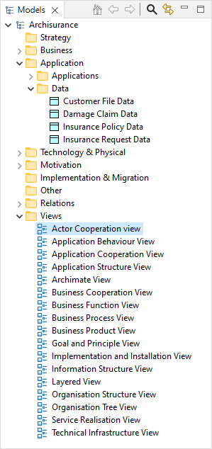

一个ArchiMate模型由许多ArchiMate概念组成，这些概念属于不同的“层” - —“业务”层、“应用”层和“技术”层。每个ArchiMate概念都属于这些层之一。例如，“业务对象”属于“业务”层，“应用组件”属于应用层。
模型中的每个概念都可以根据ArchiMate的规则通过一个或多个关系（连接）连接到一个或多个其他概念。
解释这些概念及其关系超出了本指南的范围。有关详细信息，请参阅 ArchiMate规范)
ArchiMate 模型由这些概念的配置组成，这些概念通过各种关系相互连接。ArchiMate模型在Archi中的“模型”窗口中表示为按文件夹组织的树结构：
显示示例模型的模型树窗口
每个ArchiMate概念都放置在模型树中的相应文件夹中。